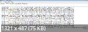

Здравья желаю.
Есть компьютер и ноутбук, подключенные к роутеру. На компьютере ютуб работает с параметрами -5 -e1 -q --fake-gen 5 --fake-from-hex 160301FFFF01FFFFFF0303594F5552204144564552544953454D454E542048455245202D202431302F6D6F000000000009000000050003000000 --dns-addr 77.88.8.8 --dns-port 1253 --dnsv6-addr 2a02:6b8::feed:0ff --dnsv6-port 1253 --blacklist ..\domains.txt --blacklist ..\russia-youtube.txt.
На ноутбуке вот с такими: -e 1 -f 2 --reserve-frag --dns-addr..... В браузерах всё хорошо. Но не получается качать видео. Ссылка на скачивание начинается с https://rr8---sn-n8v7znlk.googlevideo.com. Если перейти по этому адресу в браузере или Postmanе - выдаётся ошибка E_CONN_RESET.
Не пойму, в чём проблема. На компьютере ведь скачивание работает.
Какие параметры можно попробовать?
У меня один вопрос - откуда вы взяли это значение опции --fake-from-hex?
из 1_russia_blacklist_YOUTUBE_ALT.cmd
Видимо, внутренняя шутка @ValdikSS тогда, окей 
Что касается вашего случая
- пробовали ли вы подключать лаптоп к своему маршрутизатору кабелем?
- в точности такая же ссылка (начинающаяся именно на
rr8---sn-n8v7znlk.googlevideo.com) на вашем компьютере успешно позволяет начать загрузку?
А что это значит? Почему шутка?
нет
Да. Если открыть на компьютере в браузере, то перебрасывает на страницу со сломанным роботом.
А вы попробуйте. Расскажите, что произойдёт.
Запихните это значение в любой онлайн-конвертер HEX в ASCII.
Там в тексте запроса - Рекламное место за $10 ) Что смешного - непонятно, но многих веселит
А зачем у вас на одном роутере 2 компа с разными параметрами - в чем цимес?
Потому что на ноутбуке не работает с теми параметрами, которые на компьютере.
С проводом видео даже в браузерах грузиться перестали.
Какими браузерами вы пользуетесь? Есть ли в них какие-то расширения для обхода блокировок?
Firefox, Chrome
Есть, но сейчас они неактивны. Как и на компьютере, собственно.
Возьмите какой-нибудь один браузер, выкиньте из него все расширения по обходу блокировок, и пошагово опишите что вы делаете, пожалуйста. Если вы пользуетесь отдельным клиентом для загрузки видео с Youtube - опишите, что и как вы делаете в нём.
Всмысле? Делаю где?
Новая информация.
Ноутбук. Пареметры: -5 -e1 -q --fake-gen 5 --fake-from-hex 160301FFFF01FFFFFF0303594F5552204144564552544953454D454E542048455245202D202431302F6D6F000000000009000000050003000000 --dns-addr 77.88.8.8 --dns-port 1253 --dnsv6-addr 2a02:6b8::feed:0ff --dnsv6-port 1253 --blacklist ..\domains.txt --blacklist ..\russia-youtube.txt
rr10---sn-n8v7kne6.googlevideo.com - заработало.
но
https://rr8---sn-n8v7znlk.googlevideo.com - не работает
На компьютере те же параметры, но -6 вместо -5 и работает всё.
Если на ноутбуке написать -6 - видео не работают при просмотре с ютуба.
А если всю эту монструозную конструкцию заменить на
start /MIN "" goodbyedpi.exe -6 -s --fake-gen 2 --blacklist ..\russia-blacklist.txt --blacklist ..\russia-youtube.txt
Видео в браузерах показывает, но не качает.
Скачай с рутрахера медиахуман юпуп довнлоадер и не делай себе мозги.
А в чём разница? Ссылки же в итоге те же самые будут.
Скачать видео с юпупа не так-то просто. Оно хранится в потоках, а не в файлах. Поэтому правильный загрузчик собирает кеш обратно в файл. А если имеется прямая ссылка на файл, то это просто еще один кеш, отнюдь не максимального качества, он используется для превью и api.
Потому что в браузере ютуб подключается к нескольким серверам, а при ручном скачивании - зачастую, лишь к ближайшему. Ближайший - это, скорее всего, сервер вашего провайдера. Хз что у них там накручено может быть.
Проверьте через curl что у вас в принципе работает обход до всех серверов, которые вам регулярно подсовывает ютуб (f12 - сеть на странице с видео).
А, ну так у вас обход не работает. Вы написали https://rr8---sn-n8v7znlk.googlevideo.com выдает ERR_RESET. Это вам ТСПУ присылает RST, видимо. Поэтому и не качает - так как он с этого адреса тянуть пытается.
-5 убери . А вместо -q поставь --reverse-frag
А можно узнать как вы качаете видео, через какую программу?
Скорее всего он качает через ссылку в адресе 
Я качаю программой собственного написания. Не знаю кому как, а мне так удобнее. По нескольким причинам. Я всегда точно знаю, что и как она делает. И точно не майнит втихаря биткоины.
Однако, суть любой скачивалки сводится к тому, чтобы через API достать ссылки на файлы. А потом по этим ссылкам можно скачать любым менеджером закачки. Хоть в браузер вставить и скачать. Главное, чтобы доступ был.
Как это сделать? Какие параметры передавать в curl?
Сегодня, кстати, такая же фигня началась и на компьютере. Некоторые видео не открываются даже в браузере.
Сейчас прогоняю blockcheck запрета. Прогнался. В конце лога написано вот это:
curl_test_http3: winws strategy for ipv4 rr5---sn-n8v7knez.googlevideo.com not found
clearing winws redirection
* SUMMARY
ipv4 rr5---sn-n8v7knez.googlevideo.com curl_test_http : working without bypass
ipv4 rr5---sn-n8v7knez.googlevideo.com curl_test_https_tls12 : winws --wf-l3=ipv4 --wf-tcp=443 --dpi-desync=split --dpi-desync-fooling=badseq
ipv4 rr5---sn-n8v7knez.googlevideo.com curl_test_http3 : winws not workingЧто это значит?
Что значит к нескольким?  В
В dev.tools же, вроде, один домен показывает, который меняется примерно раз в день (точно не проверял).
Во, через запрет оно на компе раздуплилось  Позже на ноутбуке проверю.
Позже на ноутбуке проверю.
Спасибо. Я думал, запрет он только для линукса.
Сюда адрес кэш сервера, выкглядит как rr*---sn*-*.googlevideo.com:
curl -svo NUL https://rr...
Если повисло или сбросилось сразу - то плохо.
Что значит к нескольким?
В
dev.toolsже, вроде, один домен показывает, который меняется примерно раз в день (точно не проверял).
Если вы откроете видос и посмотрите запросы через F12 - Сеть (отфильтровав по слову videoplayback), там, как правило, будет 3 разных сервера.
Что это значит?
Лучше смотреть весь лог и искать там что-то оптимальное, чтобы работало везде. Ну, разберетесь, тут тем хватает.
Выдаёт:
* Trying 173.194.180.215:80...
* Connected to rr5---sn-n8v7knez.googlevideo.com (173.194.180.215) port 80 (#0)
> GET / HTTP/1.1
> Host: rr5---sn-n8v7knez.googlevideo.com
> User-Agent: curl/8.0.1
> Accept: */*
>
< HTTP/1.1 404 Not Found
< Date: Sun, 22 Sep 2024 06:19:43 GMT
< Content-Type: text/html; charset=UTF-8
< Server: gvs 1.0
< Content-Length: 1561
< X-XSS-Protection: 0
< X-Frame-Options: SAMEORIGIN
<
{ [1561 bytes data]
* Connection #0 to host rr5---sn-n8v7knez.googlevideo.com left intactНо это у меня сейчас запрет запущен.
А вот это с goodbyedpi, запущенным через 1_russia_blacklist_YOUTUBE.cmd:
* Trying 173.194.180.215:80...
* Connected to rr5---sn-n8v7knez.googlevideo.com (173.194.180.215) port 80 (#0)
> GET / HTTP/1.1
> Host: rr5---sn-n8v7knez.googlevideo.com
> User-Agent: curl/8.0.1
> Accept: */*
>
< HTTP/1.1 404 Not Found
< Date: Sun, 22 Sep 2024 06:27:17 GMT
< Content-Type: text/html; charset=UTF-8
< Server: gvs 1.0
< Content-Length: 1561
< X-XSS-Protection: 0
< X-Frame-Options: SAMEORIGIN
<
{ [1561 bytes data]
* Connection #0 to host rr5---sn-n8v7knez.googlevideo.com left intactВроде, то же самое  Однако, в браузере эта ссылка выдаёт ошибку
Однако, в браузере эта ссылка выдаёт ошибку CONNECTION_RESET.
Не понимаю, почему это важно. Когда доступ к конкретному домену есть, то и с одного прекрасно проигрывается и качается. Не вижу принципиальной разницы между “скачать” и “воспроизвести”  Разница только в интенсивности запросов.
Разница только в интенсивности запросов.
Конечно выдает. Курл у вас работает по http (порт 80) непонятно почему, ведь указано https:// который не блокируется (о чем вам ясно написал блокчек запрета), а браузер реально соединяется по https который блокируется. И правильно делает, ибо вряд ли GGC отдадут вам видео по http
Ок, мой косяк
* Trying 173.194.180.215:443...
* Connected to rr5---sn-n8v7knez.googlevideo.com (173.194.180.215) port 443 (#0)
* schannel: disabled automatic use of client certificate
* ALPN: offers http/1.1
* Recv failure: Connection was reset
* schannel: failed to receive handshake, SSL/TLS connection failed
* Closing connection 0
* schannel: shutting down SSL/TLS connection with rr5---sn-n8v7knez.googlevideo.com port 443
* Send failure: Connection was reset
* schannel: failed to send close msg: Failed sending data to the peer (bytes written: -1)Теперь с https
но тема уже давно ушла в оффтоп
Если все ок - можно пользоваться zapret либо переделать этот конфиг под goodbyedpi
А как его переделать-то? 
Укажите, какую стратегию вам выдал zapret - люди переделают (если это возможно). Ну или сами, прочитав мануал на гитхабе запрета, на гитхабе GDPI и сопоставив параметры
Он выдал мне это:
curl_test_http3: winws strategy for ipv4 rr5---sn-n8v7knez.googlevideo.com not found
clearing winws redirection
* SUMMARY
ipv4 rr5---sn-n8v7knez.googlevideo.com curl_test_http : working without bypass
ipv4 rr5---sn-n8v7knez.googlevideo.com curl_test_https_tls12 : winws --wf-l3=ipv4 --wf-tcp=443 --dpi-desync=split --dpi-desync-fooling=badseq
ipv4 rr5---sn-n8v7knez.googlevideo.com curl_test_http3 : winws not workingЯ не особо вкурсе, что всё это значит. Я запустил winws.exe с параметрами --wf-l3=ipv4 --wf-tcp=443 --dpi-desync=split --dpi-desync-fooling=badseq и ютуб раздуплился.
По-гудбаевски это банальное -e 2 --wrong-seq вроде как. Но запрет и GDPI могут вставлять фейк в разные части пакета, так что может и не сработать.
Сейчас запустил на ноутбуке с параметрами -e 2 -f 2 --wrong-seq --reverse-frag --fake-from-hex 16030301370100013303038744d596d5e166b59b26a220fd6b02290b1c4ab52fdd065686d3c554eeeec80e202e64ac10ffb2410d07f605bdb7ff47f94b7280a30c215ab8ba1924a29b104a15005c130213031301c030c02cc028c024c014c00a009f006b0039cca9cca8ccaa00c40088009d003d003500c00084c02fc02bc027c023c013c009009e0067003300be0045009c003c002f00ba0041c011c0070005c012c0080016000a00ff0100008e000d0018001608060601060308050501050308040401040302010203002b00050403040303003300260024001d0020c5dfc61b4b53a1eb0441db0077c51d3ee7a127ad4a007fc96ff62cbcd94a9231000a000a0008001d00170018001900000015001300001065617274682e676f6f676c652e636f6d000b000201000010000e000c02683208687474702f312e31 --dns-addr 77.88.8.8 --dns-port 1253 --dnsv6-addr 2a02:6b8::feed:0ff --dnsv6-port 1253 --blacklist ..\domains.txt (как и вчера).
И всё заработало. То что не работало вчера - заработало.
Я так понимаю, проблема в этих rr*.googlevideo.com. Для одного и того же видео этот домен может меняться. То есть, утром API может выдать один домен, а вечером - другой. Из-за этого видео может то работать, то не работать. То же самое с качанием.
Тогда вопрос - почему одни такие домены пробиваются, а другие нет?  Там блокировка, чтоли, какая-то разная?
Там блокировка, чтоли, какая-то разная?
одни сервера гугла находятся внутри сети провайдера, другие на сети других провайдеров, а третьи в других странах.
и соответственно для всех трех случаях может быть разная стратегия для обхода.
Предположу, что именно для этого надо задавать --set-ttl чтобы никуда кроме GGC провайдера дурилкой не лезть. А подкачать нужные куски на провайдерский GGC - это уже задача сети GGC, а не ваша
либо заблокировать все лишние сервера и использовать одну стратегию)
А с каким значением?
Это как?
Это муторнее, чем подобрать TTL )
@BlackRain начать с 2 и увеличивать на 1 пока не заработает видео
Для таких случаев предлагаю сделать систему пресетов для списков. Типа:
domains1.txt - -e 1 f 2
domains2.txt - -5 -e 2 --reverse-frag
domains3.txt - ещё как-то
Потому что для разных сайтов могут требоваться разные параметры.
Если бы это была моя программа, я бы обязательно так сделал. Эта функция прям-таки сама напрашивается, чтобы её сделали 
Вам ничто не мешает запустить из 1 CMD 2 копии программы с разными настройками, указав для каждой свой блэклист (даже какой-нибудь свой). Единственное, что не надо делать - запускать копию без блэклиста
Погодите, а так разве можно?  Винда с ума не сойдёт?
Винда с ума не сойдёт?
Нет не сойдет. Проверено лично
Это типа вот так?
@ECHO OFF
PUSHD "%~dp0"
set _arch=x86
IF "%PROCESSOR_ARCHITECTURE%"=="AMD64" (set _arch=x86_64)
IF DEFINED PROCESSOR_ARCHITEW6432 (set _arch=x86_64)
PUSHD "%_arch%"
start "" goodbyedpi.exe -9 -e 1 --dns-addr 77.88.8.8 --dns-port 1253 --dnsv6-addr 2a02:6b8::feed:0ff --dnsv6-port 1253 --blacklist ..\domains.txt
start "" goodbyedpi.exe -5 -f 2 -q --fake-gen 5 --dns-addr 77.88.8.8 --dns-port 1253 --dnsv6-addr 2a02:6b8::feed:0ff --dnsv6-port 1253 --blacklist ..\domains2.txt --blacklist ..\russia-youtube.txt
POPD
POPDИ что, так две консольки откроются?  Или в одной консольке два
Или в одной консольке два goodbyedpi?
Две консольки. Но их можно спрятать, если запинить окно GDPI на панель задач и в свойствах этого запиненого значка указать путь к нужному CMD и его папку. Можно поменять значек, взяв его из goodbyedpi.exe
Тогда оба консольных окна спрячутся за один значек на панели задач и мешать не будут
А если после start добавить /MIN то окна будут запускаться сразу свернутыми
И ещё в разных списках домены не должны совпадать, правильно?
Естественно.
Ок, спасибо, потом попробую.
Но всё-равно. Я считаю, что было бы удобнее как я предлагал.
Типа создаём файл domains1.txt. Первая строчка в нём - это параметры. А остальные строчки - сами домены. Тогда манипулировать настройками было бы удобнее. В командной строке можно было бы прописать только пути к файлам. И не было бы необходимости запускать несколько копий программы.
Чисто моё видение.
что подразумевается под “другой блэклист”? У меня только то, что скачал с гитхаба
Это просто расширение возможности ) Достаточно только 2-х строчек в CMD - блэклист ютуба и его настройки и большой блэклист и для него настройки
Я просто не понимаю, что мне нужно сделать, что бы снова одновременно работал блэклист и Ютуб. Вот настройки блэклистов.
{kind=link}
{kind=link}
Копируете полностью строчку, начинающуюся со start из YOUTUBE.cmd и вставляете ее в russia_blacklist.cmd ниже start из него
Из первой строчки убираете --blacklist ..\russia-youtube.txt из второй --blacklist ..\russia-blacklist.txt
Вот, сделал как ты написал и все еще не работает. Включаю 1_russia_blacklist и service_install_russia_blacklist_dnsredir. Закрытые сайты открываются, но ролики на Ютубе не грузятся. Включаю service_install_russia_blacklist_YOUTUBE и ролики начинают грузиться, но блэклист перестает работать
{kind=link}
Вставь в обе строчки перед --blacklist
--dns-addr 77.88.8.8 --dns-port 1253
Выполни от админа service_remove.cmd
вставить нужно в 1_russia_blacklist ?
Какой у тебя cmd на последнем скрине? Вот в него и вставляй
Вставил, но без изменений
{kind=link}
Закрыть оба окна программы
Закрыть браузер
Выполнить от админа service_remove.cmd
Запустить 1_russia_blacklist.cmd
Открыть браузер
Проверить
Если запускать только 1_russia_blacklist.cmd, то ничего не работает. Да же сам Ютуб не открывается
Замени строки в 1_russia_blacklist.cmd на такие
start /MIN "" goodbyedpi.exe -9 --dns-addr 77.88.8.8 --dns-port 1253 --blacklist ..\russia-blacklist.txt
start /MIN "" goodbyedpi.exe -9 --fake-gen 5 --fake-from-hex 160301FFFF01FFFFFF0303594F5552204144564552544953454D454E542048455245202D202431302F6D6F000000000009000000050003000000 --dns-addr 77.88.8.8 --dns-port 1253 --blacklist ..\russia-youtube.txt
без изменений
Вот теперь я вообще ничего не понимаю, у тебя IPv6 что ли?
как можно проверить?
Все понял, косякнул чуток ))
start /MIN "" goodbyedpi.exe -9 --dns-addr 77.88.8.8 --dns-port 1253 --blacklist ..\russia-blacklist.txt
start /MIN "" goodbyedpi.exe -e 2 -f 1 --reverse-frag --wrong-seq --fake-gen 12 --fake-from-hex 1603010116010001120303FEA19782F22425E5F68B4E4F73EF47E4FF9FC3876B390F59335DFA28494F4EA020A68E17835C1AD6F189C38BE4CCCCC262EA6C4E69FD7E52309DCBEB26D04C23C4002C13021301C02CC02BC030C02F009F009EC024C023C028C027C00AC009C014C013009D009C003D --dns-addr 77.88.8.8 --dns-port 1253 --blacklist ..\russia-youtube.txt
Так попробуй
без изменений. Он почему то запускает только что то одно
{kind=link}
и просто блэклист не запускается. Приходится дополнительно включать service_install_russia_blacklist_dnsredir
Потому что там форум кавычки после MIN сломал, походу ( Замени на нормальные
И убери службу, которую ты опять установил. Запуском service_remove от админа
Нафига ты ее постоянно ставишь, 1_russia_blacklist_dnsredir чем не устраивает, там то же самое
Просто править CMD установки службы сложнее, там есть риск к чертям все переломать, а так бы можно было сделать 1 настройки через службу, другие через программу с окошком
Кавычки убрал но все так же.
{kind=link}
Я кавычки убрал и нажал на service_remove. Потом запустил 1_russia_blacklist и ничего не открывается. У меня без service_install_russia_blacklist не работает
Чертовщина какая-то ) Их не надо было убирать, их надо было заменить на нормальнае, которые там где буква Э, но в лат раскладке. Верни обратно
Ты уверен, что там где буква Э? Там по одной палочке и при запуске выдает ошибку
{kind=link}
Да я уж совсем запутался. С шифтом надо нажимать
Если шифт зажать, то теже самые кавычки что были изначально и так же не работает
По итогу вернулись к исходному
{kind=link}
Вот с этим что работает и что не работает?
Попробуй окнам разные названия дать. Там где в начале две кавычки рядом “”. Впиши в одно gdpi1, в другое gdpi2.
Да у всех работает и без давания имен окнам, тут что-то другое
А нельзя ли сюда вместо скрина выставить текст этого cmd ( в формате текст как есть)?
- Нажал на service_remove и запустил 1_russia_blacklist. Ничего не открывается. Ни Ютуб, ни сайты из блэклиста.
- Снова нажал на service_remove и запустил 1_russia_blacklist_dnsredir. Так же ничего не работает.
- Нажал на service_remove запустил 1_russia_blacklist и service_install_russia_blacklist_dnsredir. Все открывается, но ролики на Ютубе не грузит
Попробуй в 1_russia_blacklist отрезать (удалить) немного букво-цифр от длинной строчки, вместе с --dns-addr 77.88.8.8 --dns-port 1253
Без изменений
{kind=link}
Можете плс текст cmd сюда вставить вместо скрина?
@ECHO OFF
PUSHD “%~dp0”
set _arch=x86
IF “%PROCESSOR_ARCHITECTURE%”==“AMD64” (set _arch=x86_64)
IF DEFINED PROCESSOR_ARCHITEW6432 (set _arch=x86_64)
PUSHD “%_arch%”
start /MIN “” goodbyedpi.exe -9 --dns-addr 77.88.8.8 --dns-port 1253 --blacklist …\russia-blacklist.txt
start /MIN “” goodbyedpi.exe -e 2 -f 1 --reverse-frag --wrong-seq --fake-gen 12 --fake-from-hex 1603010116010001120303FEA19782F22425E5F68B4E4F73EF47E4FF9FC3876B390F59335DFA28494F4EA020A68E17835C1AD6F189C38BE4CCCCC262EA6C4E69FD7E52309DCBEB26D04C23C4002C13021301C02CC02BC030C02F0
POPD
POPD
@ECHO OFF
PUSHD "%~dp0"
set _arch=x86
IF "%PROCESSOR_ARCHITECTURE%"=="AMD64" (set _arch=x86_64)
IF DEFINED PROCESSOR_ARCHITEW6432 (set _arch=x86_64)
PUSHD "%_arch%"
start "" goodbyedpi.exe -9 --dns-addr 77.88.8.8 --dns-port 1253 --blacklist ..\russia-blacklist.txt
start "" goodbyedpi.exe -e 2 -f 1 --reverse-frag --wrong-seq --fake-gen 12 --fake-from-hex 1603010116010001120303FEA19782F22425E5F68B4E4F73EF47E4FF9FC3876B390F59335DFA28494F4EA020A68E17835C1AD6F189C38BE4CCCCC262EA6C4E69FD7E52309DCBEB26D04C23C4002C13021301C02CC02BC030C02F0 --blacklist ..\russia-youtube.txt
POPD
POPD
Вот так запускается 2 экземляра gdpi. Но знаете, что интересно? Второй, тот, что с фейком - без блэклиста (его нет в командной строке). И сам фейк обрезается.

Может быть, есть какое-то ограничение на длину аргументов, кто в курсе?
{kind=link}
upd Чтоб работало для 2 блэклистов, нужно запускать так:
start "" goodbyedpi.exe --blacklist ..\russia-blacklist.txt -9 --dns-addr 77.88.8.8 --dns-port 1253
start "" goodbyedpi.exe --blacklist ..\russia-youtube.txt -e 2 -f 1 --reverse-frag --wrong-seq --fake-gen 12 --fake-from-hex 1603010116010001120303FEA19782F22425E5F68B4E4F73EF47E4FF9FC3876B390F59335DFA28494F4EA020A68E17835C1AD6F189C38BE4CCCCC262EA6C4E69FD7E52309DCBEB26D04C23C4002C13021301C02CC02BC030C02F0
Но фейк в этом случае еще больше обрезается до такого: --fake-from-hex 1603010116010001120303FEA19782F22425E5F68B4E4F73EF47E4FF9FC3876B390F59335DFA28494F4EA020A68E17835C1AD6F189C38BE4CCCCC262EA6C4E69FD7E52309DCBEB
Похоже этими фейками можно сломать не только тспу, но и командную строку))
UPD Ограничение строки командной строки - Windows Client | Microsoft Learn
В командной строке общая длина следующей командной строки не может содержать более 8191 символа
Измените программы, для которых требуются длинные командные строки, чтобы они использовали файл, содержащий сведения о параметрах, а затем включите имя файла в командную строку.
Интересно, а gdpi может читать параметры из файла?
Не может.
Ограничение фейка из строки - 116 байт, но можно указать больше - программа сама возьмет сколько нужно. А блеклиста нет во 2-й строке, потому что человек сделал совсем не то, что я просил )
Значит, это диспетчер задач режет отображение командной строки?
Похоже на то
так и что мне сделать?
Заменить 2-ю start на такую, проверить
start "" goodbyedpi.exe --blacklist ..\russia-youtube.txt -e 2 -f 1 --reverse-frag --wrong-seq --fake-from-hex 160301011C010001180303FE199189C6A2F9150AAC6899C32AA640E86E6AEFDD49406A744DBE65BD10DBE120ED905C9EF91503BB8F169648F3A7857F7FBA25FE1AEF74628BEBAC55DE5DCC40002C13021301C02CC02BC030C02F009F009EC024C023C028C027C00AC009C014C013009D009C003D
Там и в первом старте ошибка была
start /MIN “” goodbyedpi.exe -9 --dns-addr 77.88.8.8 --dns-port 1253 --blacklist …\russia-blacklist.txt
Правильно так:
start /MIN "" goodbyedpi.exe -9 --dns-addr 77.88.8.8 --dns-port 1253 --blacklist ..\russia-blacklist.txt
Это форум перекорежил, в текстовике все нормально у него
не, все так же. Он без service_install вообще не хочет работать
А если так? Вместо второй строчки
start "" goodbyedpi.exe --blacklist ..\russia-youtube.txt -e 2 -f 1 --reverse-frag --wrong-seq --wrong-chksum --set-ttl 3 --fake-from-hex 160301011C010001180303FE199189C6A2F9150AAC6899C32AA640E86E6AEFDD49406A744DBE65BD10DBE120ED905C9EF91503BB8F169648F3A7857F7FBA25FE1AEF74628BEBAC55DE5DCC40002C13021301C02CC02BC030C02F009F009EC024C023C028C027C00AC009C014C013009D009C003D
а в service_install что у вас?
Я так понял все по дефолту (-9), походу наложение параметров идет, поэтому отрубаются сайты из russia-blacklist но работает ютуб
Неа. Запускаю 1_russia_blacklist и service_install, работает только блэклист. Если допом запустить service_install_russia_blacklist_YOUTUBE, то работает только Ютуб
Ну, это логично ) Сначала вы ставите службу для блэклист - работает блэклист. Потом для ютуба - она переписывает настройки до этого установленной службы - работает ютуб )
Думаю, банальным решением будет в CMD службы для ютуба переименовать службу GoodbyeDPI в GoodbyeDPI_Y например
Вот примерно так
sc stop "GoodbyeDPI_Y"
sc delete "GoodbyeDPI_Y"
sc create "GoodbyeDPI_Y" binPath= "\"%CD%\%_arch%\goodbyedpi.exe\" -9 --fake-gen 5 --fake-from-hex 160301FFFF01FFFFFF0303594F5552204144564552544953454D454E542048455245202D202431302F6D6F000000000009000000050003000000 --blacklist \"%CD%\russia-youtube.txt\"" start= "auto"
sc description "GoodbyeDPI_Y" "Passive Deep Packet Inspection blocker and Active DPI circumvention utility (YouTube)"
sc start "GoodbyeDPI_Y"
Это вот сюда, в блэклист?
@ECHO OFF
PUSHD “%~dp0”
set _arch=x86
IF “%PROCESSOR_ARCHITECTURE%”==“AMD64” (set _arch=x86_64)
IF DEFINED PROCESSOR_ARCHITEW6432 (set _arch=x86_64)
PUSHD “%_arch%”
start /MIN “” goodbyedpi.exe -9 --dns-addr 77.88.8.8 --dns-port 1253 --blacklist …\russia-blacklist.txt
start “” goodbyedpi.exe --blacklist …\russia-youtube.txt -e 2 -f 1 --reverse-frag --wrong-seq --wrong-chksum --set-ttl 3 --fake-from-hex 160301011C010001180303FE199189C6A2F9150AAC6899C32AA640E86E6AEFDD49406A744DBE65BD10DBE120ED905C9EF91503BB8F169648F3A7857F7FBA25FE1AEF74628BEBAC55DE5DCC40002C13021301C02CC02BC030C02F009F009EC024C023C028C027C00AC009C014C013009D009C003D
POPD
POPD
Нет конечно. В CMD того сервис инсталла для ютуба, который ты запускаеть, чтобы работал ютуб. Их там 2
Пример я взял из service_install_russia_blacklist_YOUTUBE.cmd Какой ты запускаешь, я не знаю или уже забыл )
сделал. Теперь как правильно запустить?
Все запустил. РАБОТАЕТ!!! УРААААА!!!